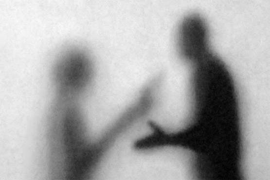

Как вести себя с ребенком-наркоманом?
Говоря о любом заболевании, можно смело утверждать, что без желания пациента вылечить его невозможно. Наркомания – это болезнь, причем очень тяжелая.
1. Старайтесь сохранять спокойствие, наберитесь терпения. Слезами горю не поможешь, так что признайте, что самое страшное уже случилось. Если Вы хотите, чтобы Ваш ребенок остался жив, не отступайте, не жалейте его, как бы тяжело это не было
2. Никогда не одобряйте приема наркотиков, стимулируя ребенка деньгами или излишней жалости. Не проявляйте слабость, от этого может зависеть жизнь Вашего ребенка.
3. Поговорите с ребенком, открыто, по-деловому. Выясните когда и почему он начал принимать наркотики, что он собирается делать дальше. Дайте понять, что он будет решать свои проблемы сам (никто не будет отдавать его долги, защищать от наркоторговцев, оправдывать в школе и институте). Дайте ему понять, что выбраться из всего этого он сможет только если сам того захочет. Очень важно, чтобы ребенок признался, в первую очередь, себе, что он наркоман.
4. Если Вы увидели у ребенка настоящее желание изменить свою жизнь (Это очень важно! Наркоманы искусные лжецы и манипуляторы!), необходимо обратится к хорошему специалисту. Вам понадобится диагностика стадии зависимости, правильная тактика лечения и реабилитации. Очень важны доверительные отношения между врачом и пациентом.
5. Во время лечения необходимо по-прежнему осуществлять контроль за жизнью ребенка. Однако после 2-3 месяцев лечения и «завязки», нужно дать ребенку хотя бы 1-2 часа в день свободы (без Вашего контроля). Фактически это право на личное время.
6. Узнайте как можно больше о наркомании, наркотиках, признаках употребления и интоксикации, детоксикации, способах лечения и реабилитации.
7. С момента лечения прекратите все разговоры о наркотиках. Если вдруг Вы подозреваете, что ребенок начал употреблять снова, лучше сначала поговорите об этом с его врачом. В противном случае, если он не начал, а Вы его подозреваете, «эффект отдачи» может оказаться слишком сильным.
8. Не бойтесь сами обратиться к психологу, если Вам нужна помощь. Это действительно очень серьезная и страшная проблема. Скорее всего, у Вас за плечами множество бессонных ночей и пролитых слез. Если Вы в каждой простуде и недомогании ребенка будете видеть наркотики, Вам будет очень сложно добиться успеха и сохранить бдительность.
Некоторые родители пытаются решить проблему изоляцией ребенка. Как? Есть множество вариантов – тюрьма, армия, переезд в конце концов. Только вот проблему это вряд ли решит. Российская тюрьма далеко не идеальное место для наркомана. Прожив там, хотя бы, полгода, он всегда будет жить по тюремным законам. Да и к тому же, при желании в тюрьме можно найти наркотики. Сложно, но можно. К тому же, в тюрьме часто продают «химическую дрянь», что тоже не сулит ничего хорошего. Похожая ситуация обстоит с российской армией. Да и переездом делу не поможешь. Вряд ли найдется такое укромное местечко, куда еще не добрались драгдиллеры. Но даже если такое найдется, по возращению его домой, проблема, из-за которой все начиналось, никуда не денется, и он вернется к наркотикам. Так что важно не уходить от проблемы, а признать ее. И лечиться.